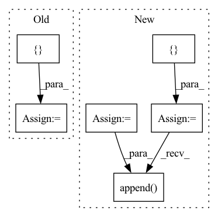

Pattern ID :724

Before Change
layers = []
for resl in list(resl2ch.keys())[::-1]:
layers += [
ResBlock(resl2ch[resl], resl2ch[resl//2])
]
if resl == list(resl2ch.keys())[1]:
break
After Change
def __init__(self, image_size=128, image_channels=3, channels=32, max_channels=512, block_num_conv=2, mbsd_groups=4):
super().__init__()
check_c = functools.partial(min, max_channels)
ochannels = channels
self.from_rgb = nn.Sequential(
Conv2d("elr", image_channels, ochannels, 1),
nn.LeakyReLU(0.2, inplace=True)
)
resl = image_size
blocks = []
while resl > 4:
resl = resl // 2
channels *= 2
ichannels, ochannels = ochannels, check_c(channels)
blocks.append(
DBlock(ichannels, ochannels, block_num_conv)
)
blocks.append(MiniBatchStdDev(mbsd_groups))
blocks.extend([
Conv2d("elr", ochannels+1, ochannels, 3, padding=1),
nn.LeakyReLU(0.2, inplace=True),
In pattern: SUPERPATTERN
Frequency: 4
Non-data size: 6
Instances
Fragment ID: 2505478
Project Name: stomoya/animeface
Commit Name: b3652bae109c713da926d5532eb014b02135da52
Time: 2020-12-14
Author: blackie0110@gmail.com
File Name: implementations/StyleGAN2/model.py
M Class Name: Discriminator
N Class Name: Discriminator
M Method Name: __init__(7)
N Method Name: __init__(1)
M Parent Class: nn.Module
N Parent Class: nn.Module
M File Name: implementations/StyleGAN2/model.py
N File Name: implementations/StyleGAN2/model.py
M Start Line: 354
M End Line: 387
N Start Line: 364
N End Line: 389
Fragment ID: 2505491
Project Name: pytorch/torchrec
Commit Name: 4f2f7cde4f35c0c239f665cb9851ef0007663cd1
Time: 2022-02-05
Author: xingl@fb.com
File Name: torchrec/modules/embedding_modules.py
M Class Name: EmbeddingCollection
N Class Name: EmbeddingCollection
M Method Name: __init__(3)
N Method Name: __init__(3)
M Parent Class: nn.Module
N Parent Class: nn.Module
M File Name: torchrec/modules/embedding_modules.py
N File Name: torchrec/modules/embedding_modules.py
M Start Line: 269
M End Line: 296
N Start Line: 269
N End Line: 308
Fragment ID: 2505470
Project Name: thomasverelst/blockcopy-video-processing-pytorch
Commit Name: acb596e747f6a8acdce7864a823f15bd226c1321
Time: 2021-10-14
Author: thomas.verelst@hotmail.com
File Name: blockcopy/blockcopy/policy/net.py
M Class Name: PolicyNet
N Class Name: PolicyNet
M Method Name: __init__(2)
N Method Name: __init__(2)
M Parent Class: nn.Module
N Parent Class: nn.Module
M File Name: blockcopy/blockcopy/policy/net.py
N File Name: blockcopy/blockcopy/policy/net.py
M Start Line: 15
M End Line: 39
N Start Line: 23
N End Line: 45